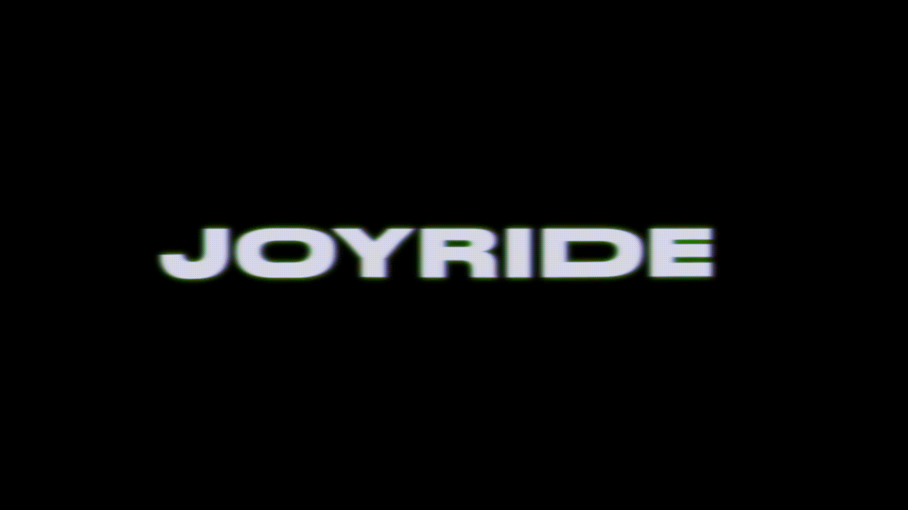
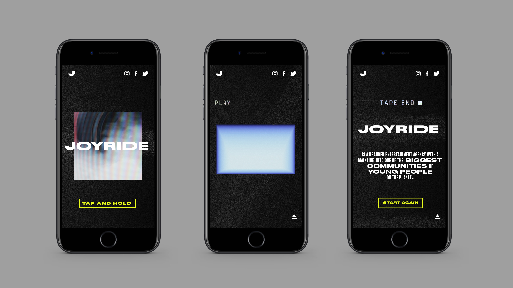
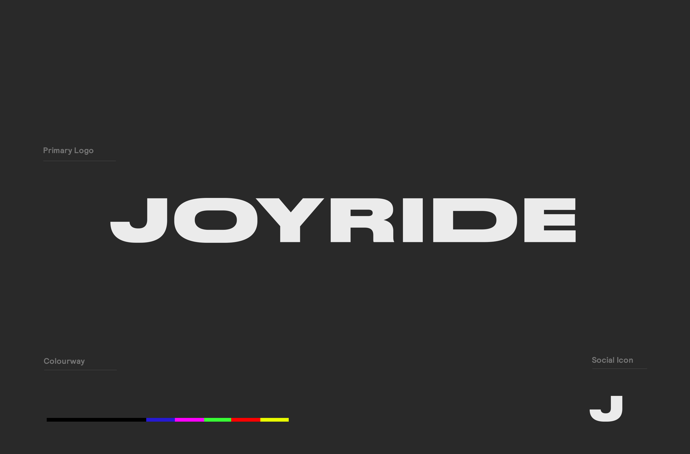
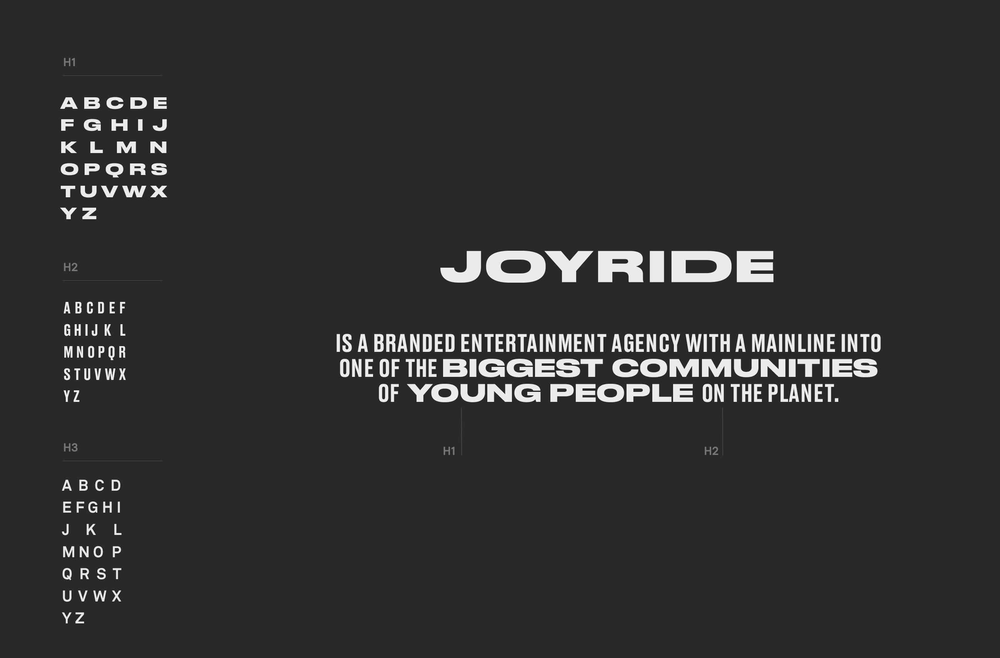
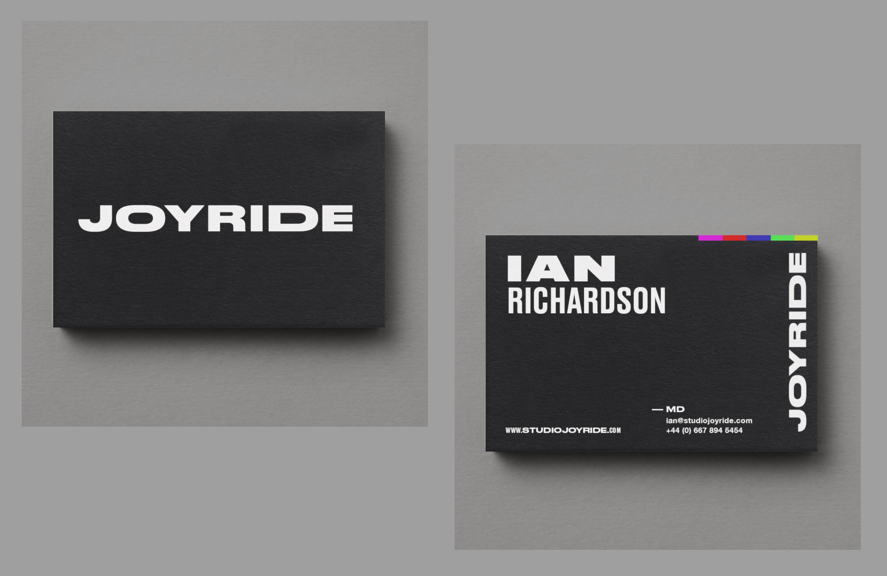

ABOUT

Branding, Website, Video
Joyride Agency Brand Design
We designed the identity for Joyride, a brand new content agency. We created the logo, typeface and colourway. Before the full site launch we created an interactive holding page. www.studiojoyride.com





Back